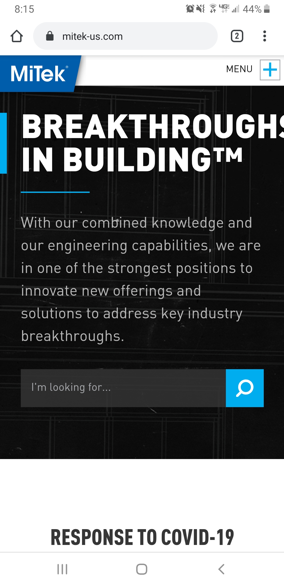
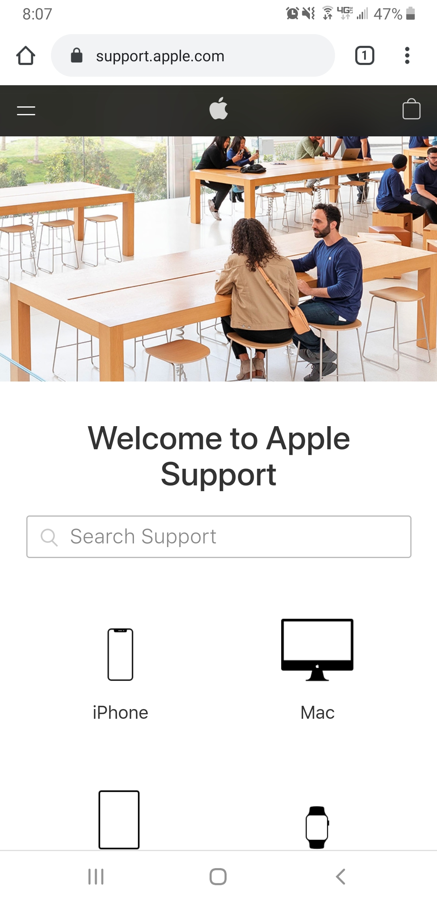

Alignment
MiniClip
MiniClip was able to really represent alignment on the mobile application. All of the games that they have listed all are right aligned, and even though the page has a lot going on, the alignment really makes it feel less busy
Contrast
MiTek
MiTek's mobile web version of their site is a great example of contrast. The use of the black, white, and blue really helps the page to stand out!
White Space and Clean Design
Apple Support
My favorite one so far though is the Apple Support page. When you first get on the site, you can tell it is a very clean looking site. They aren't afraid of letting there be white space. It is a very clean design - not too much taking up all the space.